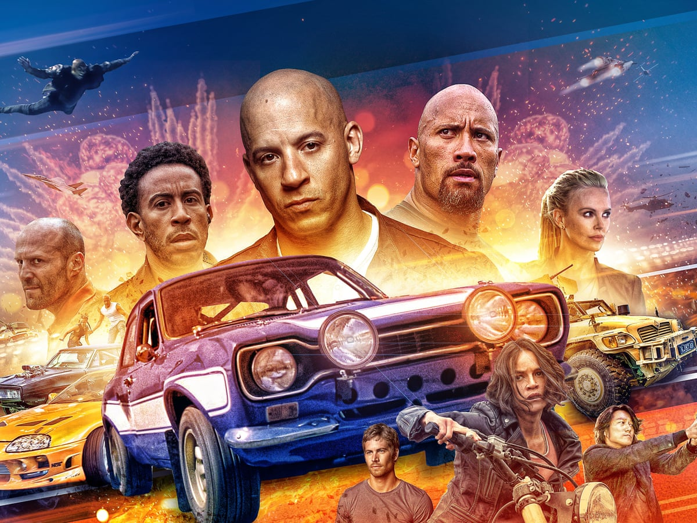
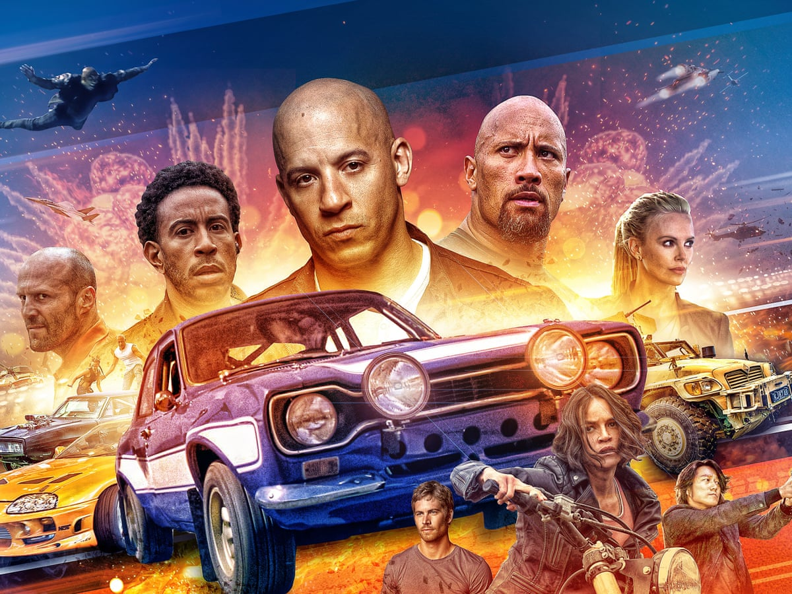
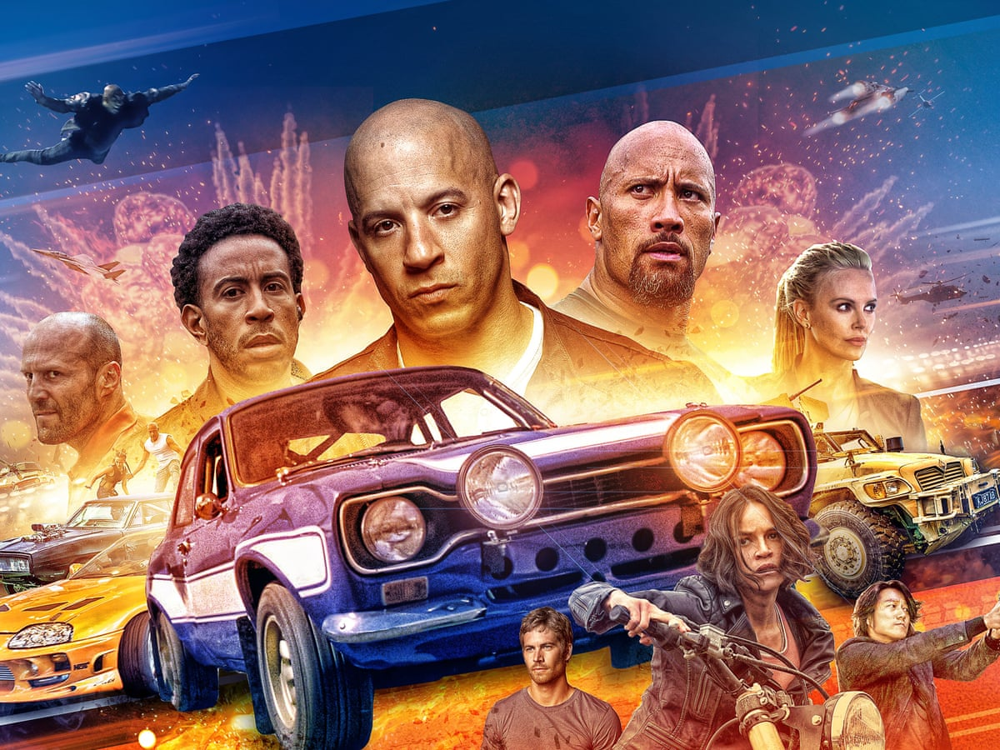
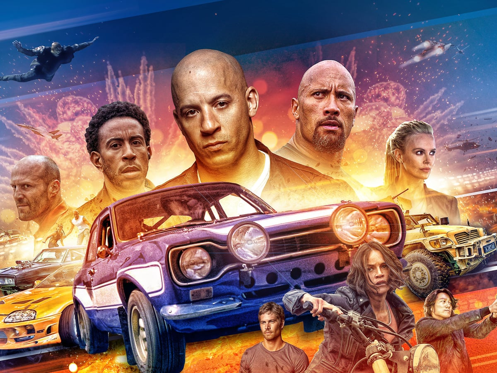

Action
 

The world of action movies has always been exciting and entertaining, offering a wide range of pulse-pounding thrills,
adrenaline-fueled set pieces, and heart-stopping moments that keep audiences on the edge of their seats. From classic tales
of heroism and survival to modern takes on the genre, action movies have something for everyone. In article, we will be
exploring some movies in the action genre, each of which is sure to leave you breathless.
Directed by Christopher Nolan, a British-American filmmaker and is considered a leading filmmaker of the 21st century.
The Dark Knight is a superhero action movie that has become a classic of the genre. The film follows the story of Batman
(Christian Bale) as he battles his arch-nemesis, the Joker (Heath Ledger), for the soul of Gotham City. The movie is a
thrilling ride from start to finish, with incredible action set pieces and a standout performance from Ledger as the iconic villain.

This film is directed by John McTiernan. Die Hard is a classic action movie that has stood the test of time. The film
follows the story of John McClane (Bruce Willis), a cop who finds himself in the wrong place at the wrong time when a group
of terrorists takes over the building where his estranged wife is attending a Christmas party. The movie is a thrilling ride
from start to finish, with plenty of shootouts, explosions, and one-liners.

This is directed by George Miller, an Australian filmmaker best known for his Mad Max franchise and have been hailed as two of
the greatest action films of all time, with Fury Road winning six Academy Awards. Mad Max: Fury Road is a post-apocalyptic action
movie that redefined the genre. The film follows the story of Max (Tom Hardy) and Furiosa (Charlize Theron), two survivors in a
world ravaged by war and environmental disaster. The movie is a non-stop adrenaline rush, with incredible car chases, explosive
action set pieces, and stunning visual effects.

This movie is directed by Doug Liman, an American film director and producer. The Bourne Identity is a spy thriller that
revolutionized the action genre. The film follows the story of Jason Bourne (Matt Damon), a CIA agent suffering from amnesia who
sets out to discover his true identity while evading his former handlers. The movie is a masterclass in action filmmaking, with
incredible fight scenes, thrilling chase sequences, and a gripping story.
Directed by Chad Stahelski, an American stuntman and film director. John Wick is a modern action classic that has become a fan
favorite. The film follows the story of John Wick (Keanu Reeves), a retired hitman who sets out on a path of vengeance after his
beloved dog is killed. The movie is a thrilling ride from start to finish, with incredible fight scenes, creative action set pieces,
and a standout performance from Reeves as the titular character.

Whether you are a long-time fan of action movies or just starting to explore the genre, these five recommended movies are a perfect
place to start. Each film showcases the best of what the genre has to offer, from explosive shootouts and daring stunts to epic fight
scenes and gripping storylines. So, grab some popcorn, turn off the lights, and get ready for a wild ride through some of the most thrilling
and exciting action movies ever made.